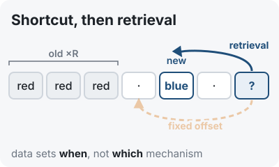

PreprintShortcut Before Circuit: Document Statistics Time In-Context Conflict Resolution
Under review, 2026
We train 26M-parameter transformers on a synthetic language where recency and rarity always co-occur, then pull the two cues apart with a minimal edit. Models reach near-perfect accuracy, yet their behavior under intervention is inconsistent. In our controlled setting, document statistics influence when models move beyond positional shortcuts, while the mechanisms that emerge vary across random seeds.
@article{liao2026shortcut,
title = {Shortcut Before Circuit: Document Statistics Time In-Context Conflict Resolution},
author = {Liao, Yijun and Liang, Fanwei},
journal = {arXiv preprint arXiv:2608.24460},
year = {2026}
}